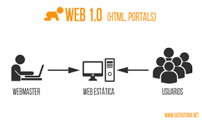
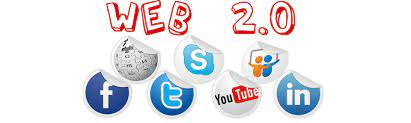

Línea del Tiempo Evolución de la Web
Web 1.0

La Web 1.0 tiene sus inicios en la década de los 90's y
en ella solo se podía consumir contenido. Se trataba de información
a la que se podía acceder, pero sin posibilidad de interactuar; era unidireccional.
Es la primera generación de la Web, y es considerada como la Web en la que solamente
era posible buscar y leer el contenido. Los usuarios no tenían la posibilidad de agregar
el contenido a voluntad, ya que esta acción estaba delegada únicamente a los usuarios expertos
(técnicos, informáticos o sistemas). La Web 1.0 comenzó como un sitio en el que las empresas difundían
su información a las personas (Aghaei, 2012). Esta información se presentaba al usuario de manera limitada
a través de páginas estáticas.
Web 2.0

La web 2.0,(apareció en 2004) y contiene los foros, los blogs,
los comentarios y después las redes sociales. La web 2.0 permite
compartir información. Y aquí estamos, de momento la mayor parte de los consumidores.
Denominada también la “Web Social”, (Arroyo, 2017) no se refiere a una actualización
de la Web común, hace referencia a un cambio de paradigma en el que es diseñado o usado
un sitio Web (Instituto Internacional Español De Marketing, 2017).
Se caracteriza porque permite crear y compartir información a cualquier tipo de usuario
sin que éste cuente con habilidades técnicas o sea un experto en programación o computación
(Cela & Hinojosa, 2013). Esta Web es especialmente enfocada a contenido generado por el usuario,
la usabilidad e interoperabilidad por parte de los usuarios finales. Gracias a estas características,
cualquier usuario puede interactuar en la Web, crear contenido y compartirlo con la mayor facilidad;
sin requerir conocimientos técnicos o especializados sobre tecnología.
Web 3.0

La web 3.0 (fue operativa en el 2010) y se asocia a la web semántica,
un concepto que se refiere al uso de un lenguaje en la red. Por ejemplo,
la búsqueda de contenidos utilizando palabras clave.
Denominada también Web semántica, su objetivo es disminuir las tareas y
decisiones de los humanos, para dejar que las máquinas proporcionen contenidos
legibles en la Web.
Incluye tecnologías semánticas, computación social e inteligencia artificial.
Facilita la cooperación entre personas, máquinas y la organización de un gran
número de comunidades y redes sociales (Aghaei, 2012).
Web 4.0

La web 4.0. empezó en el 2016 y se centra en ofrecer un comportamiento
más inteligente y más predictivo, de modo que podamos, con sólo realizar
una afirmación o una llamada, poner en marcha un conjunto de acciones que
tendrán como resultando aquello que pedimos, deseamos o decimos.
La web 4.0 es como denominamos a la internet de las máquinas que entienden
a los humanos y que aprenden cuanto más se usan (machine learning). Es La
internet de los pequeños bots, de los agentes inteligentes que chatean cual
humanos, de las casas inteligentes, de las smart cities.
Regresar al inicio